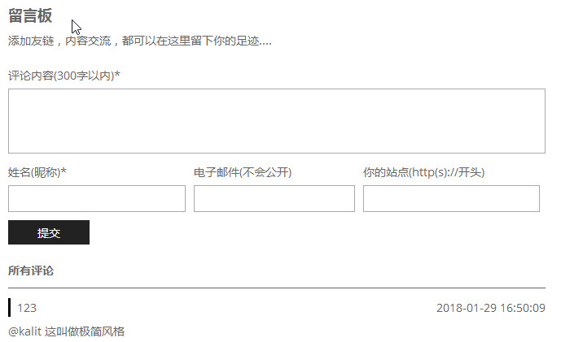

最近畅言好像要强制绑定手机号了，就想找下替代品
发现了两个比较好的静态页面评论评论系统
找了很久都没有找到适合的，最后开始找支持JavaScript请求的云数据库
最终使用Bmob云实现了本博客的评论系统，不过缺点很明显，你的key全部都曝露在js文件里面了
预览

实现
Bmob.initialize("xxx", "xxx");
//区分文章
var url = window.location.host + window.location.pathname + window.location.search;
var Comment = Bmob.Object.extend("Comment");
var count = 0;
var now = 0;
var pageSize = 10;
var reg = new RegExp("^[a-z0-9]+([._\\-]*[a-z0-9])*@([a-z0-9]+[-a-z0-9]*[a-z0-9]+.){1,63}[a-z0-9]+$");
var more = document.getElementsByClassName('comment-list-loadmore')[0];
var list = document.getElementsByClassName('comment-list')[0].getElementsByTagName('ul')[0];
var inputs = document.getElementsByClassName('comment-input');
//根据url加载评论条目
var c_count = new Bmob.Query(Comment);
c_count.equalTo("url", url);
c_count.count({
success: function (c) {
count = c;
if (c > 0) {
count = c;
loadMore(0, pageSize);
}
},
error: function (error) {
alert('查询总条数失败')
}
});
//根据时间降序列出前15条
function loadMore(skip, size) {
var c_find = new Bmob.Query(Comment);
c_find.equalTo("url", url);
c_find.descending("time"); //时间降序排列
c_find.skip(skip);
c_find.limit(size);
c_find.find({
success: function (results) {
now += results.length;
if (now == count) {
more.style.display = 'none';
} else {
more.style.display = 'block';
}
for (var i = 0; i < results.length; i++) {
var li = document.createElement('li');
var website = results[i].get('website');
if (website !== '') {
website = " href='" + website + "'";
}
li.innerHTML = "<div class='comment-list-title'><a " + website + " target='_blank'>" +
results[i].get('nickName') + "</a><span>" + results[i].get('time') +
"</span></div><div class='comment-list-content'></div>";
li.getElementsByClassName('comment-list-content')[0].innerText = results[i].get(
'content');
list.appendChild(li);
}
},
error: function (error) {
alert("拉取评论信息失败");
}
});
}
//加载下一页
inputs[5].onclick = function () {
loadMore(now, pageSize);
}
//提交评论
inputs[4].onclick = function () {
var content = inputs[0].value.trim();
var nickName = inputs[1].value.trim();
var email = inputs[2].value.trim();
var website = inputs[3].value.trim();
// 校验....
var c_insert = new Comment();
c_insert.set("url", url);
c_insert.set("nickName", nickName);
c_insert.set("email", email);
c_insert.set("website", website);
c_insert.set("time", new Date());
c_insert.set("content", content);
c_insert.save(null, {
success: function (object) {
window.location.href = window.location.href;
},
error: function (model, error) {
alert("数据存储失败");
}
});
}